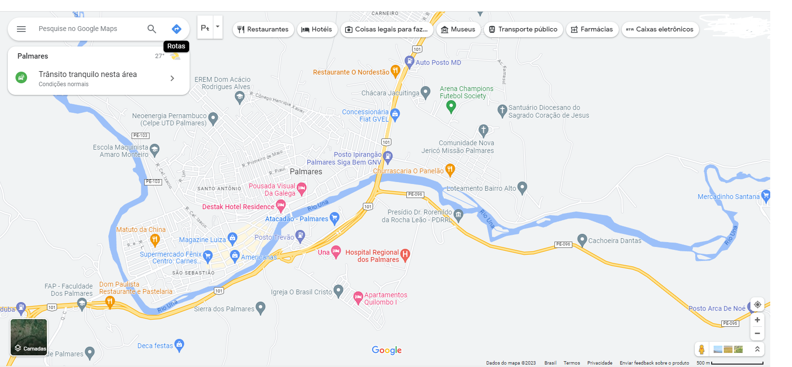

Palmares, conhecida como "Atenas pernambucana ", "Capital da Mata sul ", "A terra dos poetas " , palmares é berço de ilustres poetas, romantistas, teatrologos, entre outros. Palmares nao é so cultura...é arte.
" Minha terra tem palmeiras onde canta o sabiá; as aves, que aqui gorjeiam, não gorjeiam como lá. Nosso céu tem mais estrelas,nossas várzeas têm mais flores, nossos bosques têm mais vida, nossa vida mais amores. Em cismar, sozinho à noite, mais prazer encontro eu lá; minha terra tem palmeiras, onde canta o sabiá. " - Gonçalves dias
